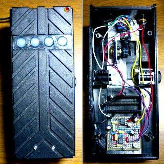
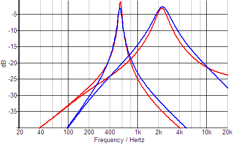
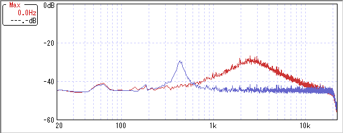

IC-WAH その1
2009年05月24日 カテゴリー：自作エフェクター（アナログ）

THE EFFECTOR BOOK VOL.2でIbanez WH10がレッチリのジョン・フルシアンテの使用で中古価格が高騰しているという記事を見て、ICを使ったワウを作ってみたくなりました。ケースは以前中古で買ったZOOM FP-01を使ってます。
WH10の回路図を探してみたところ、General Guitar Gadgetsにありました。デュアルポットではないので後期型でしょうか。なんだか見たことのない回路です。
FP-01についていた50kΩのポットを使おうと思ったんですが、可変幅としては実測40kΩぐらいだったので、それに合わせて回路シミュレータでいろいろいじってみました（動作原理はよくわかりません…）。
▽回路図・レイアウト
IC-WAH その2 のページ
▽周波数特性（シミュレーション）

赤がVOXのV847、青が今回のワウです。なんとなく周波数特性を似せてみました。また、もともとポットの穴が一つあるのでゲインポットをつけています。
▽周波数特性（実測）

青がペダルを開いたときでピークが430Hzぐらい、赤がペダルを閉じたときでピークが2.5kHzぐらいです。実際足で操作するときの可変幅はもう少し狭い感じです。
内部が意外と狭かったので基板が下の方にきてしまいました。ジャックの取り付け位置を上側から側面にしたせいです。踏み込んだときのピークの周波数を、Freqポットにつながる1kΩのトリマーで調整します。ペダルの右上に穴が空いていますが、そこからLEDが見えるようになっています。内部はアルミの板で補強しました。でも全体がプラスチックなので強度に不安はありますね…
肝心の音なんですが、ちゃんとワウワウいっています。ただポットのカーブが一般的なワウと違うので、そこは足技でカバーするしかないでしょう。まぁ一般的なインダクタのワウと比べると他にもいろいろダメな点があるかもですが、私は大してこだわりはないのでこれで十分な感じです。むしろオリジナリティがあっていいんじゃないでしょうか。